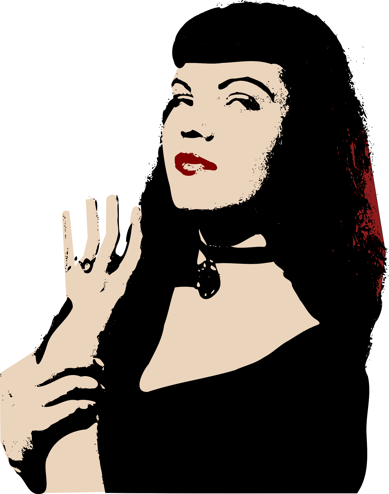
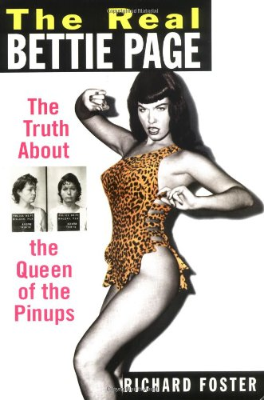
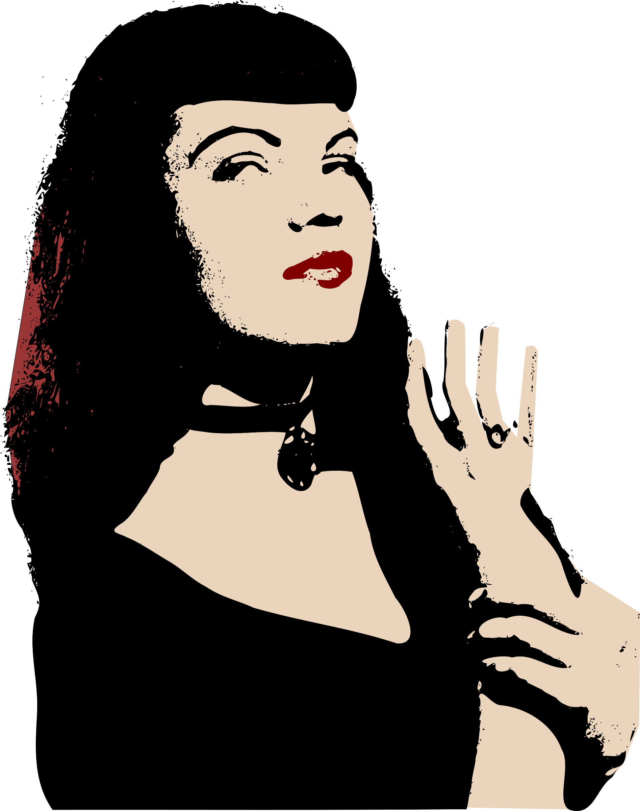

I love to swim in the nude
and roam around the house in the nude.
You’re just as free as a bird!

“Bettie Page is the Queen of Pin-ups.
the model of the century, yet she remains
one of its best kept secrets.”
— Playboy Magazine
